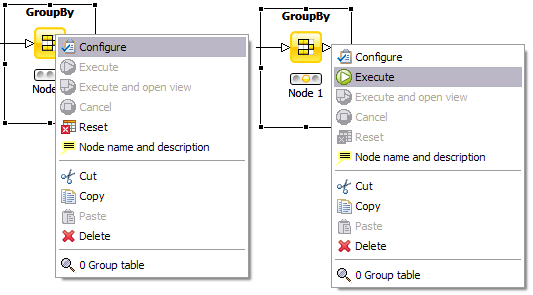
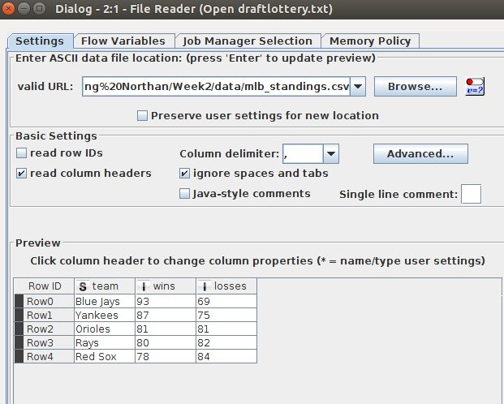

This week
- Tools for INF 428
- Install/access KNIME and Anaconda
- Learn about csv files
- Explore .csv files in Spread sheet/KNIME/Python
- Learn a bit about "dirty" data
- Go over Python examples
Resources
- Google Drive
- Black board
- Slides are on Github
- bnorthan.github.io/INF428-data-analytics
- Down arrow -> next subsection in section
- Right arrow -> next section
Let's get some data
- CSV data (Comma separated values)
- Literally rows of values separated by commas
team, wins, losses
Blue Jays, 93, 69
Yankees, 87, 75
Orioles, 81, 81
Red Sox, 78, 84
Baseball Statistics
Princeton (Mcdonalds, DJIA, etc.)
Spreadsheets
- Useful for a first pass
- (Actually useful for a lot of analysis)
- But in INF 428 we look closely at other tools (KNIME, Python)
- Still use spreadsheets for trouble shooting
KNIME
- Leading open platform for data-driven innovation
- GUI based, Node based
- Install KNIME Analytics platform
- May have to install Java
- KNIME is similar to Rapidminer
- Installing/Getting started
KNIME Organization
- Work space is made of work flows
- Work flows are made of nodes
- Look at "Open Files" work flow
- What is a node?
- What is node repository?
- Searching
- Install new nodes
- Help on nodes
Configuring Nodes
- Red - not configured properly
- Yellow - configured but has not been executed
- Green - executed successfully

|
- Right click on node to see menu
- Top option - configure (F6)
- Lower option(s) - view output
|
Trouble shooting
- Can everybody get KNIME working??
- Can you get "open files" work flow running
File Reader configuration

|
Twitter API Example

|
Python
- General purpose, high level
- Easy to learn but powerful
- Can run in an interactive shell
- Can run scripts
- Can run programs made of modules and classes
Extended with modules and packages
Try...
- Open up MLB standings in excel
- Open up MLB standings in KNIME
- Open up MLB standings in Ipython notebook
Try...
- MLB 2015 teams
- fortune 500
- This one has issues...
- Some numbers missing
- Format seems to change in the middle of the file
- Excle/Spreadsheet is useful in this case
- Open up MLB standings in Ipython notebook